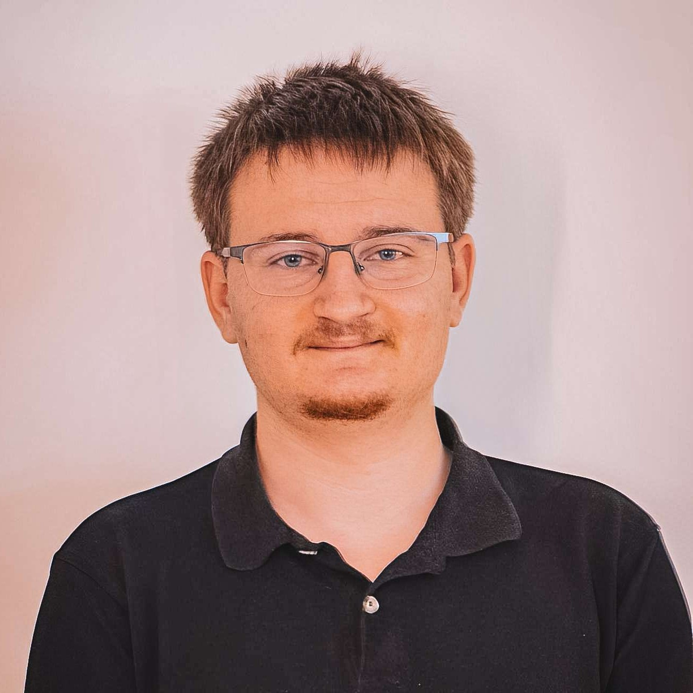
Développeur de jeux vidéo en formation au Gaming Campus, je construis depuis 2 ans des projets concrets : des jeux, des moteurs, des outils — tout ce qui me permet de progresser et de comprendre comment les choses fonctionnent vraiment sous le capot. Ma philosophie : apprendre en faisant, livrer quelque chose qui marche, et recommencer.
Étudiant en 2ème année au Gaming Campus, je me forme au développement de jeux vidéo avec une approche volontairement généraliste : gameplay programming, moteurs custom, multijoueur, outils, 3D... Je crois qu'un bon développeur doit comprendre l'ensemble d'un projet, pas seulement sa petite brique. Ce qui me motive, c'est de construire des choses qui fonctionnent vraiment — que ce soit un moteur 3D en OpenGL, un jeu bouclé en 39h lors d'une Game Jam, ou un petit outil utilitaire que j'utilise moi-même au quotidien. Chaque projet est une occasion d'apprendre quelque chose de nouveau et de me pousser un peu plus loin. Curieux par nature, j'aime autant plonger dans les bas niveaux du code que collaborer avec des artistes pour livrer une expérience de jeu complète. Mon objectif : devenir un développeur polyvalent, capable de s'adapter à n'importe quel contexte et de contribuer à chaque étape de la création d'un jeu.
Programmation orientée objet, librairie SFML / ImGui
Blueprints, multiplayer
Algorithmes, pygame, tkinter, turtle/canva
Versioning, travail collaboratif, gestion de branches
HTML5, CSS3, JavaScript, responsive design et interfaces utilisateur modernes
Modélisation 3D, texturing et rendering pour le jeu vidéo
Design graphique, création de visuels, présentations
Environnement de développement, extensions, debugging et gestion de projets
API graphique bas niveau, utilisé pour Carnaval Engine (moteur custom)
Création complète du site vitrine de
Mordekdrums
— de l'imagination au déploiement — en autonomie
totale sur 2 semaines. Première expérience de déploiement gratuit en production, qui m'a appris à
gérer l'ensemble d'un projet web de A à Z : design, développement front et back, et mise en ligne.
Un projet qui a vraiment renforcé mon autonomie.
Projet réalisé seul avec des consignes claires et détaillées.
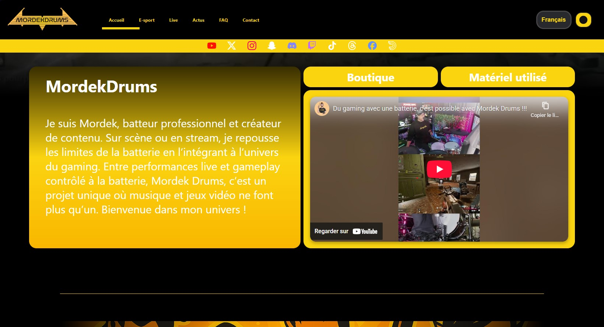
07/2025Breakout 2D réalisé en binôme en 2 semaines. Je me suis occupé des plateformes, des collisions et du
style visuel du jeu. Projet sans difficulté majeure — mais une révélation importante : j'aime bien
Hello Kitty.
Github
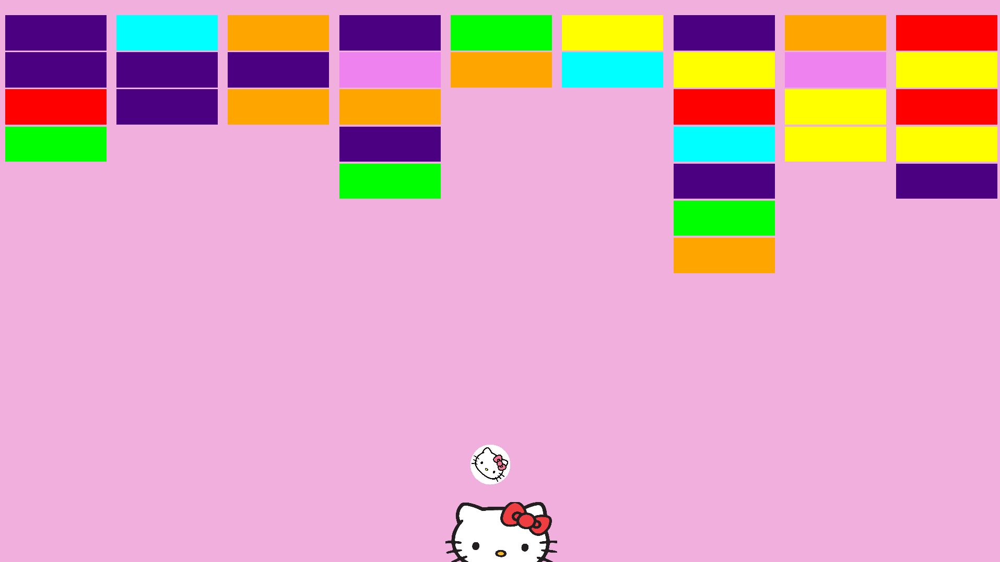
10/2025Runner 2D horizontal réalisé en trinôme en 2 semaines. J'ai pris en charge les obstacles, les
collisions, le gamestate et le style. Principal défi : maintenir la dynamique d'équipe face à un
coéquipier peu impliqué. Une première leçon concrète sur la gestion des collaborations en milieu de
projet.
Github
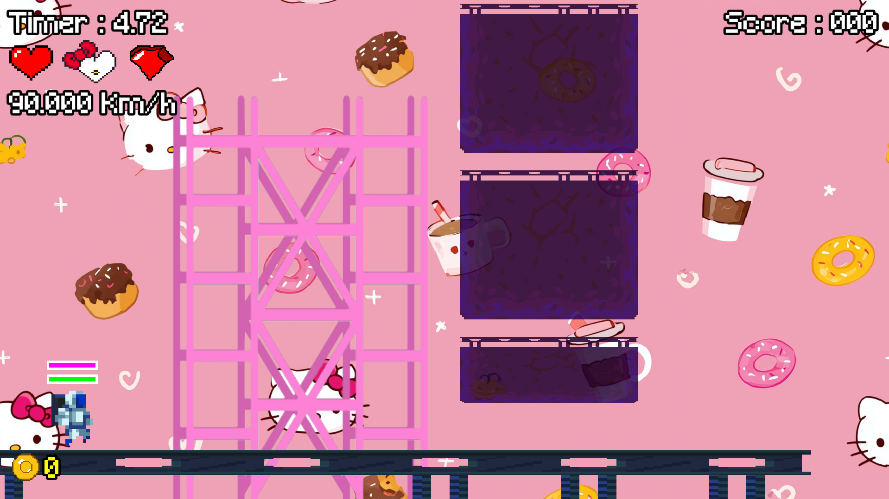
10/2025Modélisation complète d'épées en solo sur une semaine — de l'imagination au rendu final dans Unreal Engine 5, en passant par la retopologie et le texturing. Première plongée dans Blender, apprise entièrement sur le tas. Ce projet m'a donné les bases solides que j'utilise encore aujourd'hui.
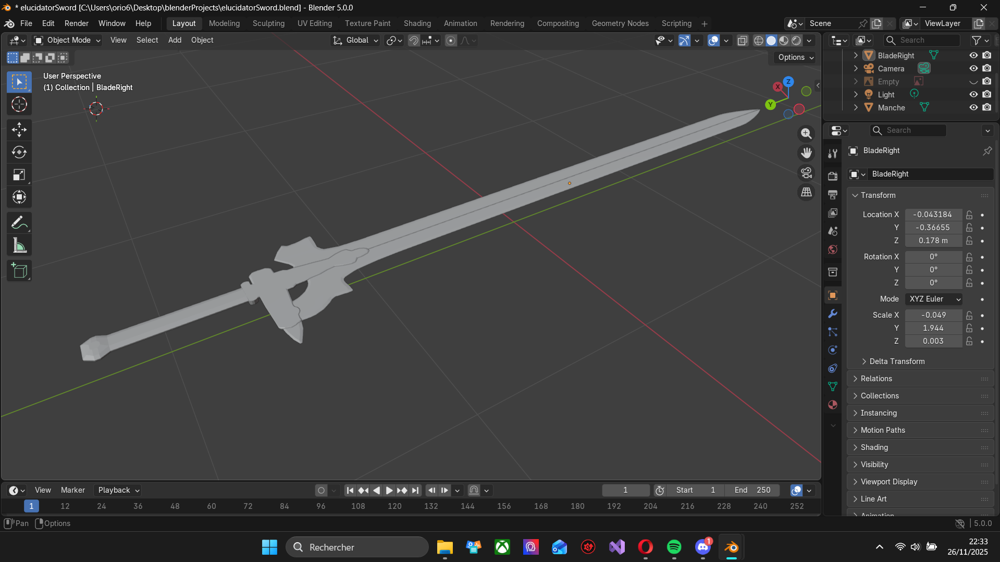
11/2025Arena shooter 3D FPS réalisé en équipe de 4 sur 3 semaines, en collaboration avec des artistes du
Gaming Campus. En tant que chef d'équipe, j'ai géré les ennemis et le gamestate, tout en découvrant
Unreal Engine 5 pour la première fois. Le vrai challenge : garder le projet sur les rails malgré une
équipe inégale. Résultat — un jeu complet livré, et une bonne dose de self-control acquise.
Github
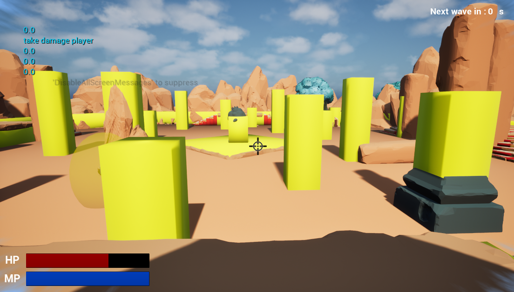
12/2025Visualisateur de pathfinding sur la carte d'Île-de-France, développé en C++ avec SFML et ImGui. Implémentation de trois algorithmes : A*, Dijkstra et BFS. Projet technique réalisé en solo, qui m'a permis de vraiment creuser la théorie des graphes et de la rendre interactive et visuelle.
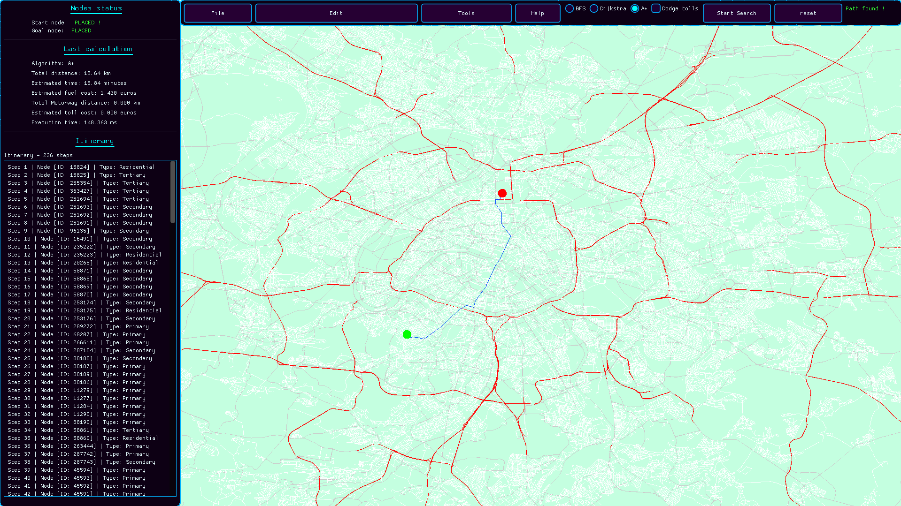
01/2026Mini-jeu multijoueur en temps réel sur Unreal Engine 5. Une exploration des mécaniques réseau et du
multijoueur, un domaine que je souhaitais découvrir après l'Arena Shooter. Projet court mais dense
en apprentissages techniques.
Github
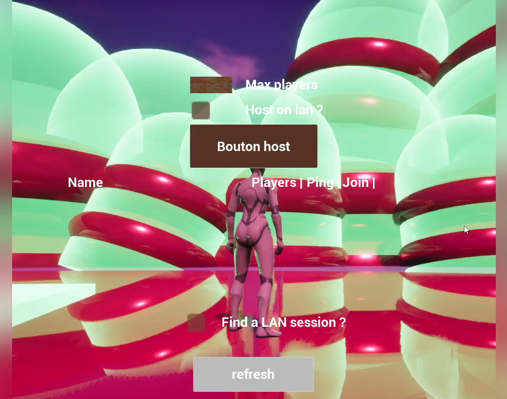
01/2026Moteur de jeu 3D custom réalisé en 5 semaines en C++ avec OpenGL. J'ai pris en charge le rendu, les
shaders, la gestion des scènes, les managers et le système de save/load — soit l'essentiel du
moteur. Première confrontation sérieuse avec la programmation bas niveau et OpenGL, et une
révélation : c'est exactement ce que j'aime faire. Le plus gros défi n'était pas technique — c'était
de faire avancer l'équipe.
Github
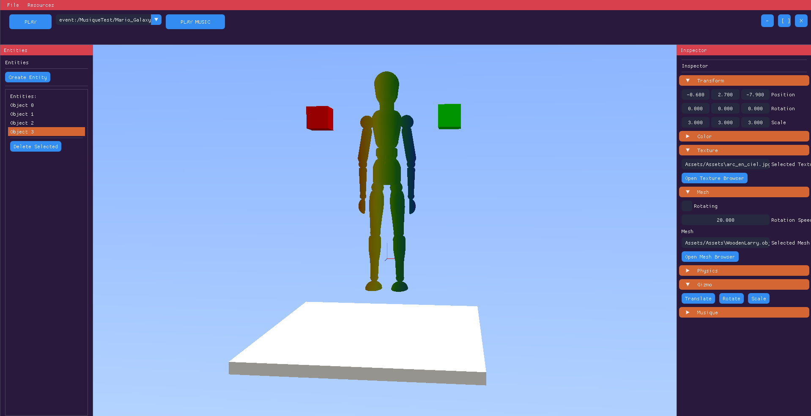
03/2026Casino/Shooter réalisé en 39h non-stop lors d'une Game Jam organisée par Gaming Campus, sur le thème
"Just One More Game". Au sein d'une équipe de 19 personnes, je me suis occupé des ennemis. Principal
apprentissage : le sommeil, c'est pas optionnel.
Github
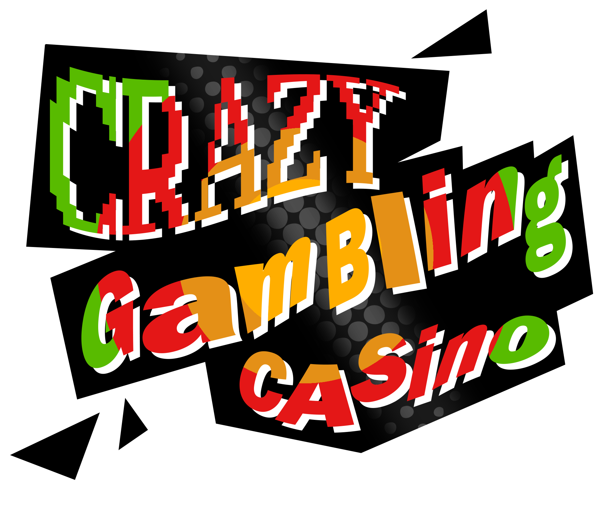
03/2026Rogue-like RPG tour par tour réalisé en trinôme sur 4 semaines, sur un moteur custom... disons,
exigeant. J'ai développé les ennemis, l'inventaire, les artefacts, les logs et toute la partie
ImGui. Malgré les contraintes du moteur, ce projet m'a confirmé que le gameplay programming est ce
qui me passionne vraiment.
Github
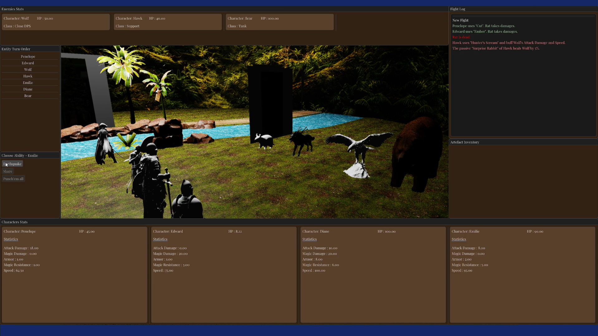
04/2026Outil Windows permettant de faire pivoter n'importe quelle page web, développé seul en une nuit. Pas
de difficulté technique particulière — juste l'envie de résoudre un problème réel. Ce projet m'a
donné quelque chose de rare : la satisfaction de livrer un outil concret et utile.
Github
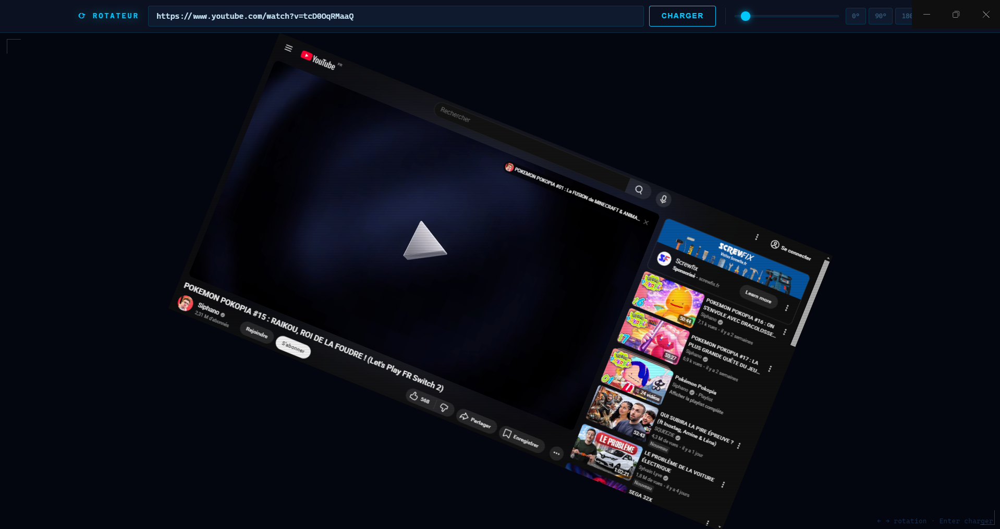
04/2026Éditeur de texte complet avec Regex personnalisable, développé seul en une après-midi. Même
philosophie que Rotator : construire quelque chose de simple, propre et réellement utile. Preuve
qu'on n'a pas besoin de semaines pour créer de la valeur.
Github
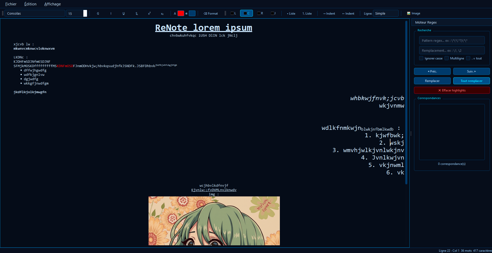
04/2026Intéressé par une collaboration ou un projet ? N'hésitez pas à me contacter !